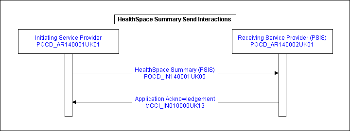
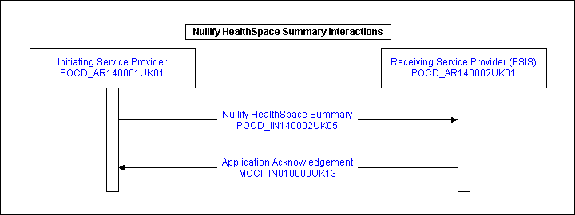

Contents
1.1 Domain Compliancy Statement
1.2 Error Correction Using CDA Replacement
1.3 Sealing not available in HealthSpace
1.4 Use of templates
2 Storyboards
2.1 Scenario 1
2.2 Scenario 2
3 Application Roles
3.1 Initiating Service Provider - POCD_AR140001UK01
3.2 Receiving Service Provider (PSIS) - POCD_AR140002UK01
4 Trigger Events
4.1 HealthSpace Summary Send - POCD_TE140001UK01
4.2 HealthSpace Summary Nullify By Replacement - POCD_TE140002UK01
5 Interaction Diagrams
5.1 HealthSpace Summary Interactions
5.2 Nullify HealthSpace Summary Interactions
6 Interactions
6.1 Recipient Responsibilities
6.2 Originator Responsibilities
6.3 HealthSpace Summary Send - POCD_IN140001UK05
6.4 Nullify HealthSpace Summary - POCD_IN140002UK05
7 Message Definitions
7.1 HealthSpace Summary - POCD_MT140001UK05
7.1.1 Message Example - Storyboard 1
7.1.2 Message Example - Storyboard 11
8 Glossary of Terms
Change History

1 Overview
The HealthSpace domain contains the message specifications which will be used to convey information from the HealthSpace system to PSIS.
At this stage it is envisaged that only HealthSpace will be sending or modifying this information. Information retrieval of HealthSpace messages is to take place using the currently specified PSIS queries.
Some types of information require the use of CRE-types whereas others prohibit the use of CRE-types - refer to the Implementation Guidance for Suppliers or PSIS Integration Strategy documents for the recommended use of CRE-types.
The CRE Section holds a list of ID's which are associated with the coded entries. The coded entries have a <reference> to the <content> in a text section which allows linking therefore enabling indirect association with a CRE-type.
Refer to the latest version of "NPFIT-ELIBR-AREL-P1R2-0178 Technical Guidance for Implementation of Templated CDA Domains" for further information on how sections and entries are linked with text.
For HealthSpace only - where codes can be applied to
the sections using templates - the author / informant participations should
not be used. These participations should be inherited from the Clinical Document
root act by the use of context conduction.
1.1 Domain Compliancy Statement
This CDA domain document utilised within this domain complies with the conformance statement from "HL7 Clinical Document Architecture, Release 2.0" (2006 Normative Edition), namely :
"A conformant CDA document is one that at a minimum validates against the CDA Schema, and that restricts its use of coded vocabulary to values allowable within the specified vocabulary domains."
This CDA specifications described in this domain makes use of a templating mechanism that supports both entry-level and section-level templating. NHS CFH have implemented the HL7 guidelines for CDA and have included localisations to aid the navigation of the CDA document.
In the absence of any other machine enforceable templating constraint mechanism the NHS CFH approach is being pre-adopted.
1.2 Error Correction Using CDA Replacement
If a document is sent in error, then the sending system should send a replacement document with the correct information using CDA replacement update semantics.
Documents can also be withdrawn by a receiving system see section 6.1 for further details.
Where this is not possible to use the above mechanism because no correcting
document is available then the previous document is required to be nullified.
A ‘nullify document’ document should be used and further details of this type
of replacement is contained in the infrastructure domain.
1.3 Sealing not available in HealthSpace
At present it is not possible to seal HealthSpace Documents. This is based on current business requirements. The HealthSpace document is a CDA document and follows a standard format, a part of which is to include the sealing attributes in the documents.
In order to ensure that HealthSpace documents cannot be sealed, the attributes are included and the values fixed to '0' (unsealed). In addition there are no sealing / unsealing templates present in the coded sections.
1.4 Use of templates
This domain uses templates, for further information on templates refer to the latest version of "NPFIT-ELIBR-AREL-P1R2-0178 Technical Guidance for Implementation of Templated CDA Domains"
2 Storyboards
2.1 Scenario 1
Frank Smith, a 64 year old man has been registered and authenticated to use
HealthSpace. Frank decides to view his demographics from the Personal Demographics
System (PDS) and his care record from the Personal Spine Information Services
(PSIS). Frank then decides to enter some details about himself in the dietary
requirements, faith preferences and disability requirements sections of HealthSpace.
Frank enters his religion as Church of England and answers 'no' to the question
'Would the user like to see a representative of their faith whilst in hospital?'.
Frank requires a gluten-free diet whilst in hospital; he enters this under dietary
requirements as 'I require a gluten-free diet whilst in hospital' in the free-text
description of the dietary requirement.
Due to a hip problem, Frank specifies 'Lift access required" under Access Requirements.
Frank has his own transport and therefore answers 'no' to the question 'Does
the user require hospital transport to get to their appointment?'.
Frank has nothing further to specify in the patient comment section and leaves
it blank.
2.2 Scenario 2
Nathan Smith, a 30 year old man has been registered and authenticated to use
HealthSpace. Nathan decides to view his demographics from the Personal Demographics
System (PDS) and his care record from the Personal Spine Information Services
(PSIS). Nathan then decides to enter some details about himself in the dietary
requirements, faith preferences and disability requirements sections of HealthSpace.
Nathan enters his religion as Islam but answers 'no' to the question 'Would
the user like to see a representative of their faith whilst in hospital?'.
He does specify that he requires a room to pray in under religious customs that
he would like observed whilst in hospital.
Nathan chooses 'Vegetarian' under dietary requirements and also enters 'I require
a gluten-free diet whilst in hospital' in the free-text description of the dietary
requirement.
Nathan answers 'no' to the question 'Does the user require hospital transport
to get to their appointment?'. He answers 'yes' to the question 'Does the user
use a hearing aid?'.
Nathan enters the text 'No alcohol-based products.' in the patient comment section.
3 Application Roles
The applications involved in the HealthSpace processes play specific roles. These, along with the interactions associated with each role, are identified below.
3.1 Initiating Service Provider - POCD_AR140001UK01
The Initiating Service Provider is responsible for initiating the following HealthSpace interaction: HealthSpace Summary.
The Initiating Service Provider receives responses to the above interactions from the Receiving Service Provider.
Initiating Service Provider Interactions

3.2 Receiving Service Provider (PSIS) - POCD_AR140002UK01
The Receiving Service Provider (PSIS) receives, acts upon and provides the requested services for the following HealthSpace interaction: HealthSpace Summary.
The Receiving Service Provider (PSIS) initiates responses for the above interactions to the Initiating Service Provider.
Receiving Service Provider (PSIS) Interactions

4 Trigger Events
4.1 HealthSpace Summary Send - POCD_TE140001UK01
A HealthSpace Summary trigger event indicates that an HealthSpace Summary is ready to send.
4.2 HealthSpace Summary Nullify By Replacement - POCD_TE140002UK01
For the HealthSpace Summary document to be withdrawn, the trigger event is the realisation that the HealthSpace Summary document was sent in error, in that it contained an error and should never have been sent and that no correct HealthSpace Summary document is available to send.
5 Interaction Diagrams
5.1 HealthSpace Summary Interactions
Note - Application Acknowledgements are sent to originating systems for notification of successful or failure handling by the receiving application.

5.2 Nullify HealthSpace Summary Interactions

6 Interactions
Note:- For CDA domains the interactions are bound to the
"NPfIT
CDA generic model" and use the "NPfIT
CDA generic schema" instead of the "NPfIT Domain CDA model schema".
The CDA Domain models are used for conformance checking of NPfIT templates after
transforming the "Generic NPfIT CDA" instance to "NPfIT Domain CDA" instance.
The recipient and sender responsibilities stated in section 6.2 onwards are additional to the standard CDA recipient and originator responsibilities.
An NPfIT perspective of the standard CDA responsibilities are detailed within this section.
6.1 Recipient Responsibilities
Assume default values where they are defined in this specification, and where the instance does not contain a value :
- Where CDA defines default values, the recipient must assume these values in the event that no value is contained in a CDA instance.
Parse and interpret the complete CDA header :
- A recipient of a CDA document must be able to parse and interpret the complete CDA header.
- Because applications may choose to display demographic and other CDA header data drawn from a central master directory, the rendering of the CDA document header is at the discretion of the recipient.
- An NPfIT style sheet is included within the MIM. Use of this style sheets is at the discretion of the recipient.
Parse and interpret the CDA body sufficiently to be able to render it :
-
Where a system receives a document outside of its conformance level it may chose to only render the document
-
A recipient of a CDA document must be able to parse and interpret the body of a CDA document sufficiently to be able to render it, using the following rendering rules:
-
The CDA structured Body, the label of a section, as conveyed in the Section.title component, must be rendered.
-
A recipient of a CDA document is not required to parse and interpret the complete set of CDA entries contained within the CDA body only those applicable to the receiving systems conformance level.
-
A recipient of a CDA document on receipt of a document equal to or less than it's conformance level is required to validate a CDA document against referenced templates.
-
A recipient of a CDA document on receipt of a document with templates higher than it's conformance is not required process those coded entries and should render the textual representation only.
Error handling
Possible Scenario
The GP recognises that reports sent to him about his patient
is not actually his patient.
Example 1
Incorrect NHS number used by originator. Document arrives saying this is for
John Smith, NHS #, DOB etc. Where the NHS# the GP system is for Jane Smith etc.
Example 2
Report arrives at GP, in the next consultation with patient GP discuss report
with patient, who denies he had the care. How this could occur, if someone turns
up to AE and uses someone else name, address, DOB etc.
A recipient on receipt of such a invalid / incorrect document may deal with
errors by either:
-
Sending an Application Acknowledgement to the originating system stating the error type using one of the error codes from the code list for the domain contained in the relevant External Interface Specification.
or
-
The receiving system may nullify the document using a "nullify document" document which MUST be sent to all recipients and the originating system.
Note - Application
Acknowledgements are sent to originating systems for notification of
successful or failure handling by the receiving application.
6.2 Originator Responsibilities
Properly construct CDA Narrative Blocks :
- An originator of a CDA document must ensure that the attested portion of the document body is structured such that a recipient, adhering to the recipient responsibilities above, will correctly render the document.
The CDA structured Body:
- The label of a section must be conveyed in the Section.title component.
- The attested narrative contents of a section must be placed in the Section.text field, regardless of whether information is also conveyed in CDA entries. Attested multimedia referenced by URL in the narrative must not be carried in the document sent to PSIS.
- An originator of a CDA document is not required to fully encode all narrative into CDA entries within the CDA body only those applicable to the sending systems conformance level.
Error handling
An Originating system on receipt of an Application Acknowledgement containing
the one of the error codes from the code list for the domain contained in the
relevant External Interface Specification should initiate a work stream to rectify
any error by either:
-
Replacing the invalid document with a new correct version
or
- by nullifying the invalid document using the "Nullify Document" document which MUST be sent to all recipients.
It should also nullify any local cache / copy as necessary.
An Originating system on receipt of a "Nullify Document" document for any document
it has sent, should initiate a work stream to rectify any error including nullifying
any local cache / copy as necessary.
6.3 HealthSpace Summary Send - POCD_IN140001UK05
Communicates a HealthSpace Summary to PSIS
|
Sending Role |
Initiating Service Provider |
|
|
Receiving Role |
Receiving Recipient (PSIS) |
|
|
Trigger Event |
HealthSpace Summary |
|
|
Transmission Wrapper |
Send Message Payload |
|
|
Control Act Wrapper |
Control Act |
|
|
Message Type |
HealthSpace Summary |

Receiver Responsibilities
|
Reason |
Interaction |
|
On receipt of document |
Application Acknowledgement |
The receiving system should replace any copy of the document stored or cached on the system on receiving a new version of a document.
6.4 Nullify HealthSpace Summary - POCD_IN140002UK05
Communicates the nullification (by replacement) of a HealthSpace Summary to PSIS.
|
Sending Role |
Initiating Service Provider |
|
|
Receiving Role |
Receiving Service Provider (PSIS) |
|
|
Trigger Event |
HealthSpace Summary Withdrawal |
|
|
Transmission Wrapper |
Send Message Payload |
|
|
Control Act Wrapper |
Control Act |
|
|
Message Type |
Nullification Document |

Receiver Responsibilities
|
Reason |
Interaction |
|
On receipt of document |
Application Acknowledgement |
The receiving system must also nullify any copy of the document stored or
cached on the system.
7 Message Definitions
7.1 HealthSpace Summary - POCD_MT140001UK05
The HealthSpace Summary communicates information about an HealthSpace and optionally information about the care provided during the HealthSpace event.


7.1.1 Message Example - Storyboard 1
7.1.2 Message Example - Storyboard 11
8 Glossary of Terms
| Application Acknowledgement | A response from one application to another indicating that a message has been received and is valid. |
| Application Role | The role played by the application in a particular interaction. |
| Clinically Relevant Time Template | A template used to express a clinically relevant time where no coded clinical template can be used. |
| Coded Clinical Template | A template used to express coded clinical information. This includes sealing acts. |
| Data type | The structural format of the data carried in an attribute. |
| Data Type Flavour | A subdivision of a particular data type. |
| DCE UUID | Universally Unique Identifier. |
| ED | Emergency Department, previously known as Accident & Emergency. |
| EHR | Electronic Healthcare Record. |
| Legitimate Relationship. | A Legitimate Relationship is a relationship between a clinician (or NHS organisation work group) and a patient, that gives the clinician, or workgroup member, certain levels of entitlement to access that patient’s health record maintained on National Systems. |
| NHS CRS | NHS Care Record Service. |
| OID | Object Identifier, a unique identifier e.g. used to identify coding systems. |
| Provider | An alternative term for a fulfiller. |
| PCT | Primary Care Trust, responsible for primary and community health services within a geographical boundary. |
| PDS | Patient Demographic Service. |
| PSIS | Personal Spine Information Service. |
| Requestor | The HCP responsible for the request. |
| SDS | Spine Directory Service. |
| Service User | A person who is registered on the PDS. |